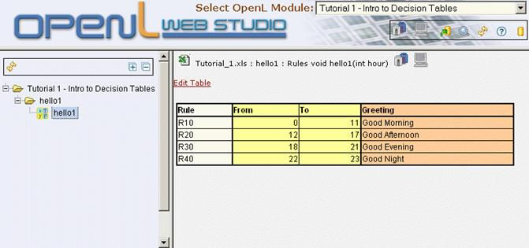
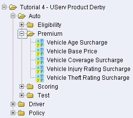

Rule Editor
This section briefly introduces rule editor. For detailed information on
tasks that can be performed in rule editor, see
Chapter 3: Using Rule Editor.
The following topics are described in this section:
Rule Editor Overview
Rule editor provides controls for users to browse rule modules and
modify table data. This is the default editor opened when a user logs
in.
Rule editor resembles the following:

Rule editor displays one module at a time. To switch between modules,
the user must select a module in the
Select OpenL Module list box. One rule project can contain several modules.
The left pane displays the module tree providing a view of elements in
the currently displayed rule
module.
The right pane displays contents of the table selected in the left pane
and provides controls for modifying table data, running tests, and
checking test
results.
The upper part of the window contains a toolbar with the following
buttons:
|
Rule editor toolbar buttons
|
|
Button
|
Description
|
|
|
Switches rule editor to business view.
If a business view is already opened, this button switches between
different business
views.
For information on view modes, see View Modes.
|
|

|
Switches rule editor to developer view.
For information on view modes, see View Modes.
|
|
|
Opens a window for uploading projects from user's workspace to design
time
repository.
For information on this operation, see Uploading Projects to Design Time Repository.
|
|
|
Opens the search window.
For information on performing searches, see Performing a Search.
|
|
|
Refreshes OpenL Web Studio with latest changes in user's workspace.
|
|
|
Opens OpenL Web Studio help.
|
|
|
Switches user interface to repository editor.
For general information on repository editor, see Repository Editor.
|
View Modes
OpenL Web Studio provides the following display modes for showing rule elements:
|
Project display modes in rule editor
|
|
Mode
|
Description
|
|
Business view
|
Project view is business oriented displaying only those project elements
relevant to a business user. Structure of the tree is logical rather
than physical. Rule tables are organized into categories based on Excel
table sheets. The following is an example of a module tree displayed in
business
view:

OpenL Web Studio hides various technical table details when a table is opened in
business view. The following is an example of a table opened in business
view:
OpenL Web Studio provides three slightly differing business views, mainly in the depth
of the module tree. To switch between the different business views, a
user must repeatedly click the business view
button.
The user can switch to the business view by clicking Business View  . .
|
|
Developer view
|
Project is displayed in a way convenient to developers with module tree
elements organized by type rather than logic. The following is an
example of a module tree displayed in developer
view:
OpenL Web Studio shows various technical table details important for integration with
code when a table is opened in developer view. The following is an
example of a table opened in developer
view:
User can switch to developer view by clicking Developer View .
|